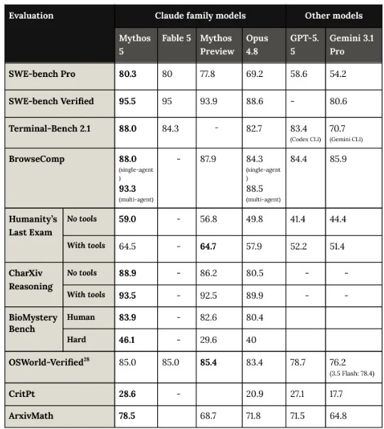

AI 개발 도구
Hands-on
에이전트 · 토큰이 곧 성능인 시대
S/W개발팀 SE · 김학민 · 2026. 6
프로그램 구성
Part I 맥락 · Part II Claude Code Hands-on
이미 여러 에이전트가 한 팀(스웜)으로 일하는 단계
익숙한 흐름 — 오늘의 초점은 그 다음에 무엇이 달라졌는가
SECTION 01
이미 일어난 변화
개인의 체감이 아니라 — 업계의 기준선
기획자(PM) : 개발자 비율의 역전
기획 : 개발
1 : 7
기획 : 개발
2 : 1
구현 시간 3주 → 1일 — 병목은 '무엇을 만들지 정하는 일'로 이동
코드 생성이 아니라 — 개발 사이클 전반에 확산
기능 개발
리팩터링
PR 리뷰
테스트 · 엣지
원인 분석
가설 검토
장애 대응
로그 · 문서화
'코드 짜는 도구'가 아니라 개발 사이클 전체에 스며드는 구조
업계 기준선 — 이미 표준이 된 숫자들
개발자 세계에서는 이미 기본기 — 다음 차례는 모든 직군
"자연어가 새로운 프로그래밍 언어가 되고 있고, 더 많은 사람이 기계와 직접 대화한다"— Jensen Huang, NVIDIA CEO
명령어가 아니라 의도로 컴퓨터를 움직이는 시대
가늠할 수 없는 격차

챗봇과 에이전트는 — 애초에 할 수 있는 일이 다르다
SECTION 02
챗봇 ≠ 에이전트
그리고 팀(스웜)으로 — 한쪽 경험으론 다른 쪽을 가늠하기 어렵다
인터페이스의 축: 지시 → 위임
'어떻게'를 일일이 지시하다가 — '무엇을'만 위임하는 단계로
콜센터 ARS vs 전담 비서
챗봇과 에이전트의 결정적 차이
ARS (챗봇)
1번 누르세요, 2번 누르세요
정해진 메뉴 바깥은 불가
매번 처음부터 다시 설명
전담 비서 (에이전트)
맥락을 이해하고 알아서 조사
판단 · 실행 · 중간 보고
피드백 반영 · 후속 조치까지
둘은 구조적으로 다른 체험 — 한쪽 경험으로 다른 쪽을 가늠하기 어려움
대답하는 도구 → 일하는 도구
| 챗봇 (ARS) | 에이전트 (비서) | |
|---|---|---|
| 환경 인식 | 주어진 정보만 참조 | 프로젝트 전체 맥락 이해 |
| 실행 능력 | 텍스트 답변만 | 파일 수정 · 도구 실행 |
| 작업 범위 | 1회 질의-응답 | 수 시간 자율 실행 · 보고 |
| 오류 대응 | 다시 지시해야 함 | 자체 감지 → 수정 → 재시도 |
비유로 이해하는 구조
같은 두뇌(모델)라도 어떤 제품(에이전트) 위에서 구동하느냐로 결과가 달라짐
성능 공식
성능 = Model × Agent × 나(Pilot)
추론 능력 (두뇌)
Opus 4.8 · GPT-5.5 · Gemini 3.5 Flash
도구 사용·실행·팀 구성
Claude Code · Codex
판단·지시·검증
도메인 지식 · 프롬프트
셋 중 하나라도 0이면 결과도 0 — 쓰는 사람이 곱셈의 한 축
같은 에이전트가 — 한 명에서 팀(스웜)으로
방금 본 '전담 비서' 한 명을 — 전문가 팀으로 확장
에이전트 1명
Solo · 순차 처리
한 번에 하나씩
리서치
작성
검증
반론
한 명이 순서대로 하던 일을 팀이 동시에 — 개인 작업에서 조직 작업으로
Agent Team(스웜)은
토큰을 기하급수적으로 쓴다
여러 에이전트 · 교차 검증 · 반론 — 그만큼 컴퓨팅(토큰)을 폭발적으로 태우고,
그 대가로 산출물 품질이 올라간다
품질을 컴퓨팅 파워로 살 수 있는 영역
SECTION 03
토큰 = 성능
모델을 기다리는 시대에서 — 컴퓨팅을 태우는 시대로
품질의 출처 이동 — 모델에서 에이전트·스웜으로
모델 기여는 세대마다 완만·꾸준 · 품질의 큰 몫이 에이전트·스웜으로 이동 — 멀티·팀 단위로 토큰을 태운 만큼 산출물 품질이 오르는 시대
오늘 기준 모델 라인업 · API 비용 (2026.6)
| 모델 | 컨텍스트 | 입력 | 출력 | 포지션 |
|---|---|---|---|---|
| Claude Fable 5 NEW | 1M | $10 | $50 | 최상위 · Mythos급 |
| Claude Opus 4.8 (1M) | 1M | $5 | $25 | 주력 프런티어 |
| Claude Sonnet 4.6 | 1M | $3 | $15 | 구현·리뷰 |
| Claude Haiku 4.5 | 200K | $1 | $5 | 탐색·병렬 |
| GPT-5.5 · Gemini 3.5 Flash | 200K~2M | $2~ | $12~ | 교차검증 |
단가 = USD / 1M 토큰 · 기존 라인은 같은 가격의 점진 업데이트 · 캐싱 90%↓ · 배치 50%↓
새 최상위 티어 — Claude Fable 5 (6/9 출시)

출처: Anthropic — Claude Fable 5 and Mythos 5 (2026.6.9)
무엇
화제의 Mythos, 첫 일반 공개판 — Opus 위 새 티어
$10 / $50 · 1M 컨텍스트 · API·유료 플랜 사용 가능
성능
SWE-bench Pro 80 (Opus 4.8 69.2) —
코딩·비전·장기 컨텍스트 작업 전반 SOTA
가드
보안·생물학 고위험 질의는 Opus 4.8로 폴백 (세션 5% 미만)
가드 없는 Mythos 5는 검증된 보안 파트너·연구자 한정
Mythos 5와 동일 아키텍처, 차이는 안전장치 — 최상위 지능은 이제 가드를 달고 출시되는 시대
토큰은 이제 — 돌릴 수 있는 '품질 다이얼'
단일 에이전트 · 1패스
빠르고 저렴
긴 컨텍스트 · 깊은 추론(effort)
더 꼼꼼한 산출물
멀티에이전트 · 교차 검증 · 반론
품질을 컴퓨팅으로 매수
"더 좋은 모델이 나올 때까지 기다린다"가 아니라 — 지금 토큰을 더 태워 품질을 올린다
물론 무한정은 아님 — 한계 효용은 줄고, 사람의 판단(Pilot)이 빠지면 토큰만 태우는 셈
이미 일어난 변화 — README가 사람용/에이전트용으로 분기

출처: GitHub — Oh My OpenCode README
For Humans
"이 설치 프롬프트를 에이전트에게
복사해서 붙여넣으세요"
For LLM Agents
curl -s 로 가이드를 직접 가져와
각자 환경에 맞춰 실행하세요
"사람이 직접 설치하면 오타낸다 — 에이전트한테 시켜라"
문서의 독자가 사람만이 아닌 것은 이미 오픈소스의 현실
부록 · 여담
왜 메모리 수요가
폭증하는가
학습에서 추론으로 — '토큰 = 성능'이 메모리 수요로 번지는 이야기
성능을 만드는 축 — 학습에서 추론으로
성능 = 더 크게 학습한 모델
사전학습 스케일링이 주역
성능 = 추론 때 토큰을 더 태움
추론 스케일링 · 멀티에이전트
추론이 AI 연산에서 차지하는 비중 1/3(2023) → 2/3(2026) · Jensen Huang(GTC 2025): "추론 연산 수요는 1년 전 예상의 100배"
성능 레버가 학습(FLOP)에서 추론(토큰 = 메모리)으로 이동
토큰을 태워 성능을 산다 — 추론이 상시화·병렬화
사용자 수가 같아도 — 토큰 소모가 수~수십 배 → 동시 추론 세션 폭증
병목은 결국 메모리 — KV Cache가 HBM을 먹는다
KV Cache = 지금까지의 모든 토큰의 Key/Value를 HBM에 상주 — 컨텍스트 길이 × 동시 요청 수에 정비례로 증가
| 컨텍스트 (Llama 3.1 70B) | KV Cache · 1요청 | 동시 4요청 |
|---|---|---|
| 8K 토큰 | ~2.5 GB | ~10 GB |
| 128K 토큰 | ~40 GB | ~160 GB |
| 1M 토큰 | ~320 GB | ~1.3 TB |
128K · 동시 4요청 → H200(141GB) 한 장 초과 · 1M KV Cache = 모델 가중치(140GB)의 2.3배
연산력은 2년마다 3.0배지만 메모리 대역폭은 1.6배(Gholami, 2024) — 추론은 메모리에 묶이고, 토큰 = 성능은 곧 HBM 수요
HBM만이 아니다 — DRAM·NAND가 함께 끌려 올라간다
KV Cache가 HBM을 넘치면 — HBM → DDR5 → NAND(SSD) 계층을 타고 내려가며 전 계층 메모리를 소비
공급도 압박 — HBM 증설이 2026년 DRAM 웨이퍼의 23%를 잠식 → 일반 DRAM 품귀·가격 +18~23% QoQ
토큰 폭증 = HBM · DRAM · NAND 전 계층 동시 수요
SECTION 04 · 핵심
역할의 변화
구현에서 설계 · 판단으로 — 오늘의 핵심 인사이트
구현 비용의 붕괴
"코드 작성은 점점 값싼 상품이 되고 있고, 정말 중요한 것은 어떤 질문을 할 수 있느냐다"— Jensen Huang, NVIDIA CEO
만드는 비용이 0에 수렴할수록 — '무엇을·왜 만드는가'의 값이 상승
역할은 어떻게 변하는가 — AI가 초안, 사람이 판단
키보드 타격 시간은 줄고 — 판단·검증의 밀도가 상승
차별화는 — 도메인 전문성 × AI
범용적이지만
깊이 부족
깊지만
속도 제한
깊이 + 속도
= 차별화된 결과물
범용 AI 위에 우리만의 도메인 경험이 얹힐 때 생기는 차별화
인지 노동의 심화 — 오늘의 핵심
산출물을 확인하고
맥락·판단을 더하는
사람 쪽 작업
AI가 빨라질수록 — 다음 결정을 내리는 사람이 critical path
생산성의 역설과 도파민 루프
AI가 일을 해준다고 사람이 편해지는 것은 아니다
SECTION 05
AI는 증폭기다
쓴다고 무조건 좋아지지 않는다 — 오히려 불편해지는 것도 많다
AI 만능론을 경계해야 한다
AI를 처음 깊게 써보며 누구나 겪는 감정 곡선

AI로 하는 것은 쉬워졌지만 — 잘하는 것은 여전히 어렵다
AI는 증폭기(Amplifier)
효과 가속
문제 악화
AI는 마법이 아니라 증폭기 — 좋은 기반은 가속, 나쁜 기반은 혼란도 가속
AI의 실수를 걸러내는 것까지가 — 사람의 일
존재하지 않는 데이터를
자신 있게 생성
가짜 출처 · 틀린 수치가
그럴듯하게 섞여 들어감
실수를 알아채고 걸러내는
감각을 학습으로 키우기
속도가 올라간 만큼 — 검증을 빠뜨리는 비용도 같이 커진다
인지 소진 — 실천적 대응
도구가 빨라졌다고 사람까지 빨라져야 하는 것은 아니다
SECTION 06
현실 제약과
실천 방향
기술 가능성과 우리 환경의 적용 가능성은 별개의 문제
우리 환경의 제약
제약은 실재하지만 — 그 안에서 할 수 있는 일이 이미 충분히 많다
S/W 개발팀이 현재 진행 중인 사항
DS부문 차원의
AI 도구 적극 활용 방침
공통 인프라 조직과
메모리사업부 SW조직
외부 AI 도구 활용
개발 효율화 PoC 진행
전사 의지 · 협업 기반 · 선행 PoC — 이미 실행 궤도 위
이제 — 직접
맥락은 여기까지 — 이제부터
Claude Code로 에이전트를 직접 움직이는 Hands-on
PART II · Claude Code Hands-on
PART II
Claude Code
Hands-on
읽는 시간은 끝 — 직접 움직여 본다
Claude Code — 파일 위에서 일하는 에이전트
'코딩 도구'가 아니라 파일 시스템 위에서 작동하는 범용 작업 인터페이스
에이전트는 이렇게 일한다 — Agent Loop
챗봇은 1회 응답 — 에이전트는 목표 달성까지 이 루프를 스스로 반복
'도구 호출 → 관찰'이 환경에 직접 개입하는 부분 — 그래서 무엇을 허용할지(권한)가 중요
오늘 핸즈온 흐름
대부분의 설정은 Claude에게 시켜서 직접 하게 둔다 — 우리는 무엇을 시킬지만 정함
PART II
환경 셋업
대부분 Claude에게 시키면 된다
가장 먼저 던질 프롬프트
PROMPT
"내 개발 환경을 셋업하려고 해.
내가 직접 할 것과 네가 대신 할 수 있는 것을
구분해서 알려줘."
설정의 대부분은 Claude가 · 나는 확인·승인만
터미널 — 무엇을 써도 되지만
PowerShell · cmd 그대로 OK — 기왕이면 WezTerm + bash 기본 추천
# ~/.wezterm.lua — 기본 셸을 bash로
config.default_prog = { 'bash', '-l' }
"WezTerm에서 bash 기본으로 설정해줘" — 이 파일도 Claude가 작성
alias — 매번 묻지 않게
# ~/.bashrc alias claude='claude --dangerously-skip-permissions'
claude 만 쳐도 권한 확인 없이 바로 작업 — 흐름이 끊기지 않음
주의 — 모든 동작을 승인 없이 실행하는 모드. 신뢰할 수 있는 내 환경에서만. (보안상 프로젝트 설정에선 무시되고, 사용자 설정에서만 적용)
상태 표시줄(statusline)
한눈에 상황을 읽는 계기판 — 정답은 없으니 취향껏
git · 모델 · 컨텍스트 · 비용 · 메모리를 한 줄에
PROMPT
"내 statusline을 만들어줘 — 애매하면 요즘 좋은 BP 사례를 조사해서 맞춰줘"
설정 = Claude가 쓰는 파일, 나는 승인·재시작
설정 파일 작성
settings.json · .bashrc
wezterm.lua · statusline
방향 결정 · 확인
셸 재시작 · 로그인
(대화형 인증)
"구분해서 알려줘"
먼저 묻고
나눠서 시킨다
손으로 설정 파일을 외워 쓰던 시대가 아니다 — 시키고, 읽고, 승인
Harness란? — 별거 아니다
에이전트가 무엇을 해야 하고 무엇을 하지 말아야 하는지를
잘 세팅해 두는 것
그게 전부 — 그 세팅을 다듬는 작업이 Harness Engineering
도구는 CLAUDE.md · Rules · 권한 · Hooks — 결과물이 아니라 결과를 만드는 환경을 손본다
PART II
Skill
반복 절차를 한 단어로
Skill — 자주 하는 일을 한 단어 명령으로
반복 절차를 한 단어로 — 팀에 공유하면 누구나 같은 결과
# 한 단어로 호출 /deep-research 주제 # 안에 정의된 절차가 실행 검색 → 교차검증 → 합성 → 인용
만들기 전에 — 좋은 걸 찾아 쓴다
예전엔 스킬 제작이 소양 — 지금은 좋은 스킬세트를 찾아 쓰는 것
시즌마다 유행이 바뀐다 — 인기 있거나 내게 맞는 걸 골라 /plugin 으로
주기적으로 — "요즘 인기 많은 Claude Code 스킬세트 조사해서 추려줘" 하고 적용·체득
PART II
Lab — 직접
리포트 하나로 — 만들고 · 스킬화하고 · 재현
실습 — 리포트에서 스킬까지
한 번 잘 만든 절차가 반복 가능한 자산이 되는 걸 직접 확인
PART II
실무 Tips
바로 써먹는 활용 패턴
Tip — Confluence 문서 · drawio 다이어그램
마크다운 문서를 잘 만들 듯 — Confluence 문법 문서도 그대로 잘 만든다
Tip — 발표자료(PPT)도 잘 만든다
PROMPT
"원하는 주제를 — 컨설팅 보고서 스타일로,
최신 뉴스·자료를 참조해 데이터 중심·차분한 톤으로
10장 발표자료 만들어줘."
주제 자유 — 반도체 업황 · 삼성전자 주가 · Vera Rubin 아키텍처 등
완성형 PPTX까지 아주 잘 만든다 — 초안을 분 단위로
알아두면 좋은 슬래시 명령어
/goal | 완료 조건을 정하고 충족까지 계속 작업 |
/loop | 같은 작업을 주기적으로 · 스스로 페이스 조절해 반복 |
/hooks | 도구 이벤트에 맞춰 자동 동작 연결 (자동화) |
/voice | 음성 받아쓰기 — 말로 지시 |
/simplify | 바뀐 코드를 정리·단순화 (버그는 /code-review) |
/batch | 큰 변경을 단위로 쪼개 워크트리에서 병렬 처리 |
using-superpowers | 작업에 맞는 스킬을 자동 선택해 적용 |
기본기 /plan · /compact · /clear · /fast 도 함께 — 외우기보다 필요할 때 찾아 쓴다
자주 쓰는 프롬프트 패턴
- "내가 할 것과 네가 할 수 있는 것을 구분해서 알려줘"
- "이 레포 구조를 요약하고 CLAUDE.md 초안을 만들어줘"
- "방금 한 과정을 재사용 스킬로 만들어줘"
- "요즘 인기 많은 플러그인·스킬을 조사해서 추려줘"
- "이 주제로 10장 발표자료 / Confluence 문서를 만들어줘"
정답 프롬프트는 없다 — 방향을 주고, 결과를 읽고, 다시 시킨다
Today’s Takeaway
- 1. 챗봇 ≠ 에이전트 — 그리고 현재는 팀(스웜)
- 2. 모델은 꾸준한 직선, 에이전트는 중반부터 가속 — 토큰 = 성능
- 3. 값이 올라가는 건 설계·판단·검증 — 사람의 몫
- 4. AI는 증폭기 — 실수를 걸러내는 훈련이 필요
- 5. 설정은 Claude에게 시키고, 좋은 스킬은 찾아 쓴다
배운 건 나누자
성공 경험 공유도 중요하지만 —
실패 경험을 나누는 게 정말 큰 도움
혼자 실패해 보는 것보다 — 여러 사람이 실패해 보면 훨씬 많은 시간을 아낀다
Q & A
질의 · 토론
- 오늘 중 바로 시도해볼 한 가지는?
- 우리 팀 레포 CLAUDE.md 첫 줄에 뭐라고 쓸까?
- 팀과 공유하고 싶은 스킬·프롬프트는?
AI 개발 도구 Hands-on · 2026. 6 · 김학민